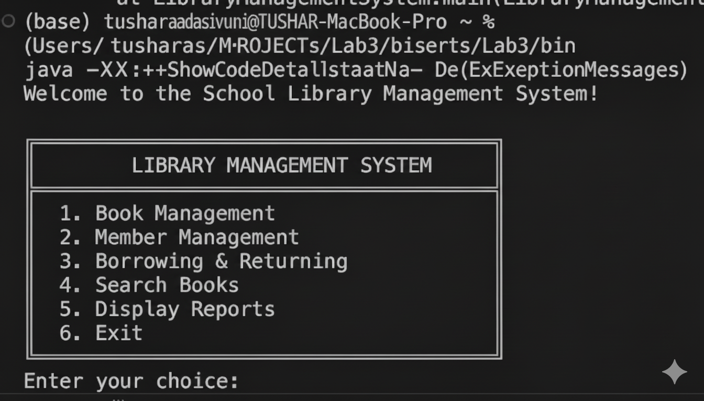

LAB 3
Submit all .java files related to today's lab
Submission in the folder in college (no submissions via emails)
Deadline: today by the end of the class time.
Make sure to give your attendance to the TA before you leave the classroom
____________________________________________________________________________________________________________________________________________
Given an AI prompt in the file, ‘AI_Prompt.txt’. Use this in your AI of choice. The output should be a java program that shall be compiled without errors. It is your job to use the code from an AI output and try to achieve a clean compile without errors. This will require you to create a VS Code Java project, copy the files into the ‘\src’ folder, and ‘Run’ the code. You will encounter many errors and frustrations. This lab is designed to increase your critical thinking with using an AI to program a software system.
Upload the following:
My running program:
